La agenda de tu peluquería o barbería, las citas en línea, los cobros, la caja y lo que gana cada peluquero, desde el celular o la computadora.
Todo es por módulos: eliges lo que tu salón necesita.
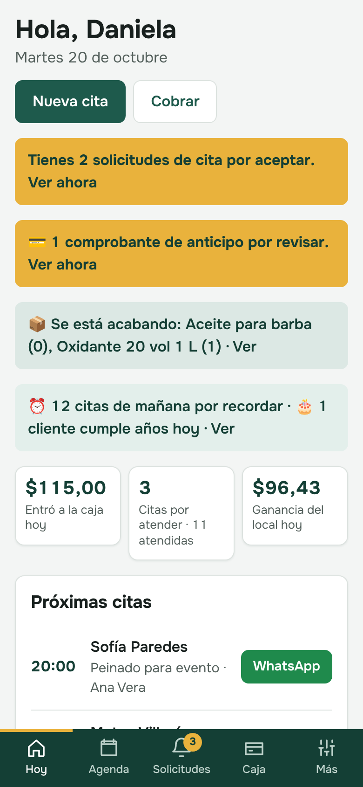
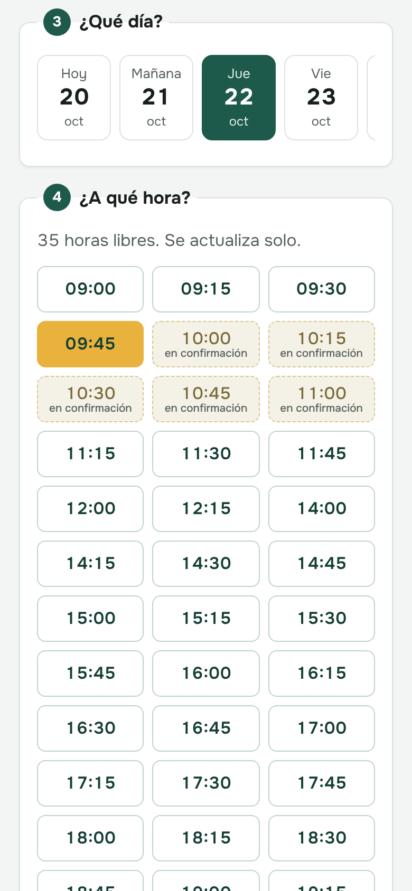
Capturas reales del salón de ejemplo Salón Demo Tukán.
tusalon.tukanec.com
WhatsApp 099 640 8397 · info@tukansoftware.com · tukansoftware.com
TuSalón es el sistema para peluquerías y barberías de Ecuador, de la marca Tukán Software. Reemplaza el cuaderno de citas, la calculadora y los mensajes sueltos de WhatsApp. Funciona en el celular, la tablet y la computadora, sin instalar nada: entras a tusalon.tukanec.com con tu correo y tu contraseña. Todo queda guardado en internet: si se te daña el celular, no pierdes nada.
| Quién | Cómo entra | Qué hace |
|---|---|---|
| El dueño | Con su correo y contraseña | Todo: agenda, cobros, caja, equipo, servicios, reportes y su plan |
| Recepción (módulo) | Con la cuenta que le crea el dueño | Agenda, cobra y cierra la caja sin ver las ganancias |
| El peluquero (módulo) | Con el acceso que le crea el dueño | Ve sus citas, lo que hizo y lo que le toca |
| El cliente | Con el enlace del salón, sin descargar nada | Reserva, confirma, cambia o cancela su cita y califica |
En la pantalla de entrada toca Solicitar demo. Llena tu nombre, el nombre de tu salón o barbería, la ciudad, tu WhatsApp, tu correo, qué necesitas y los módulos que te interesan, y toca Solicitar demo. Tukán te escribe por WhatsApp, prepara tu salón y te manda tu correo y contraseña.
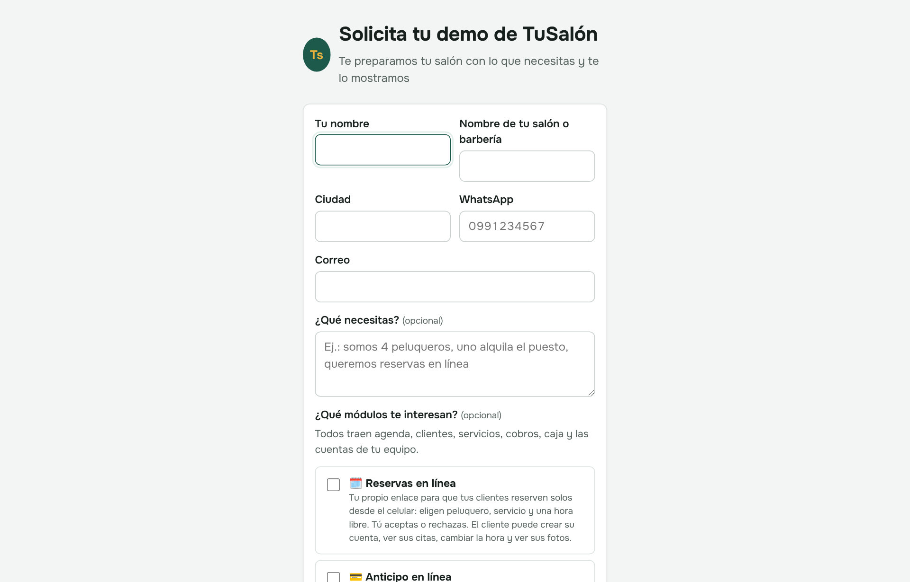
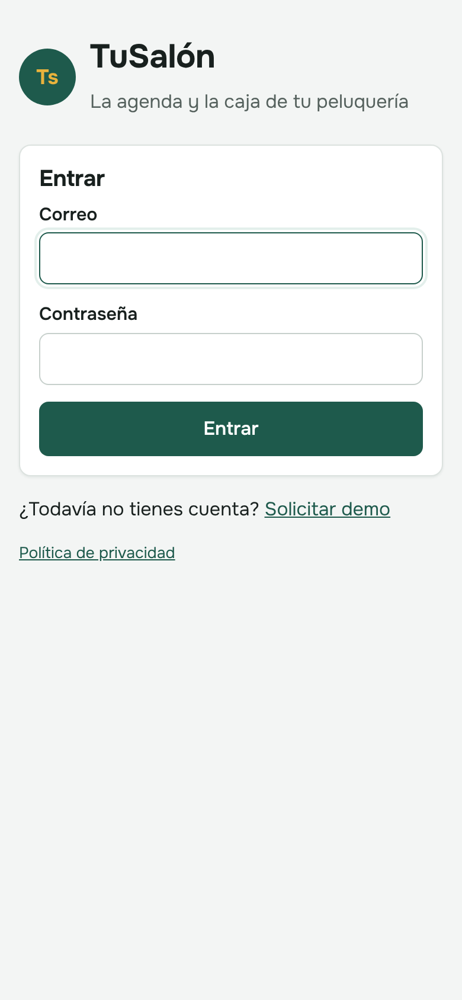
En el celular el menú está abajo: Hoy, Agenda, Solicitudes, Caja y Más. En Más están Clientes, Avisos a clientes, Servicios, Horario y reservas, Cuentas, Mi plan y los módulos que tengas.
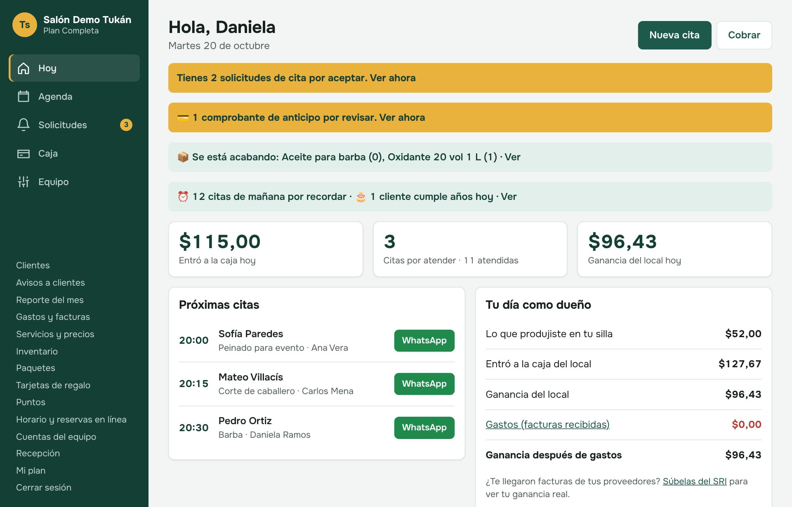
| Dueño | Recepción | Peluquero | |
|---|---|---|---|
| Agenda, nuevas citas y solicitudes | Sí | Sí | Solo las suyas |
| Cobrar y cerrar la caja | Sí | Sí | No |
| Clientes y recordatorios por WhatsApp | Sí | Sí | Sus clientes privados (si alquila el puesto) |
| Ganancia del local, gastos y reporte del mes | Sí | No | No |
| Cuentas del equipo | Sí | No | Solo lo que gana él |
| Servicios, precios, horario, equipo, inventario y Mi plan | Sí | No | No |
En Más → Recepción el dueño crea la cuenta: nombre, Correo con el que entra y una contraseña, y toca Crear cuenta de recepción. Puede Cambiar contraseña, Quitar acceso y Devolver acceso. Los avisos de reservas que le llegan al dueño también le llegan a recepción.
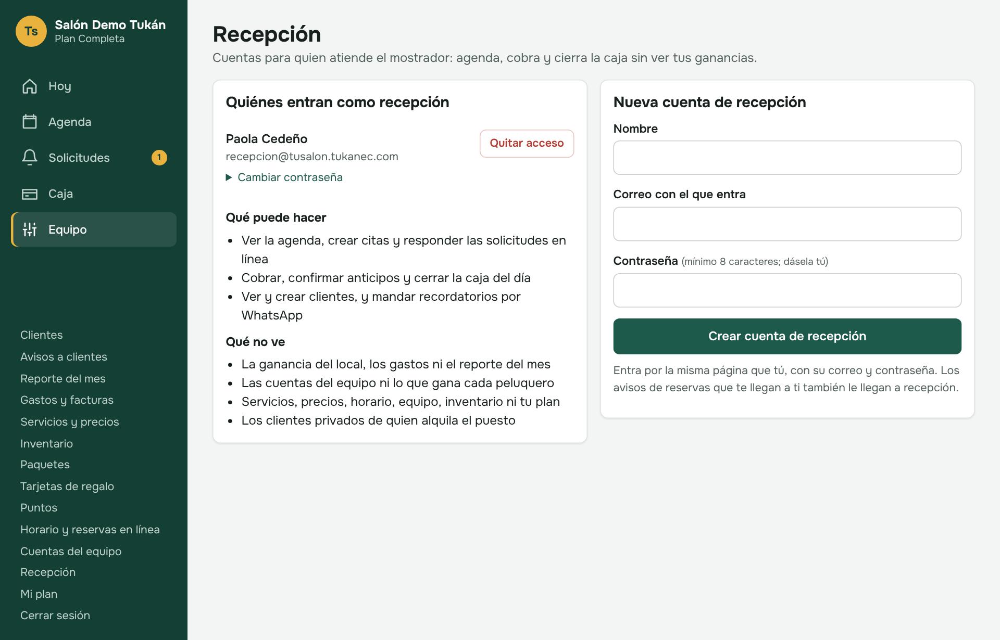
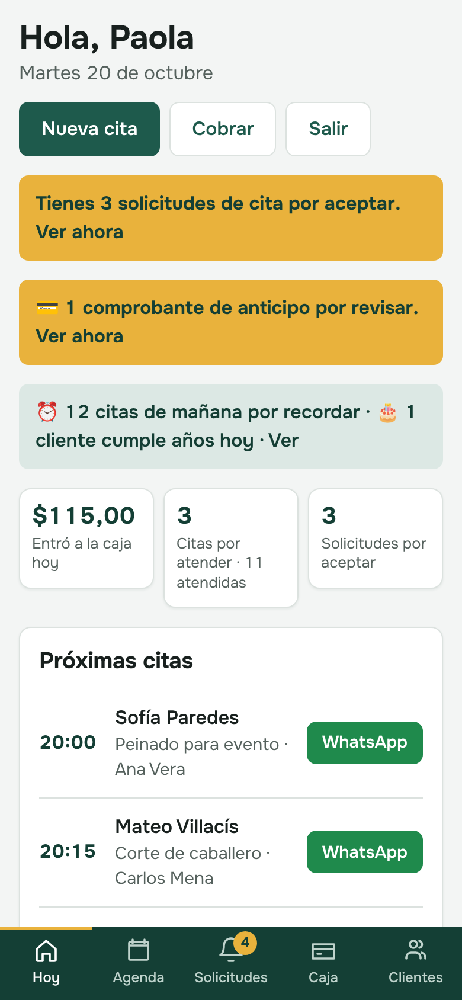
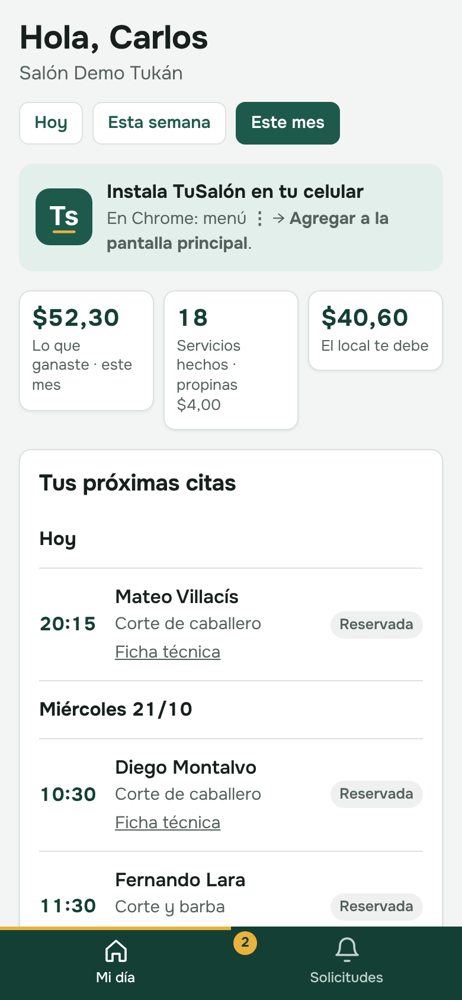
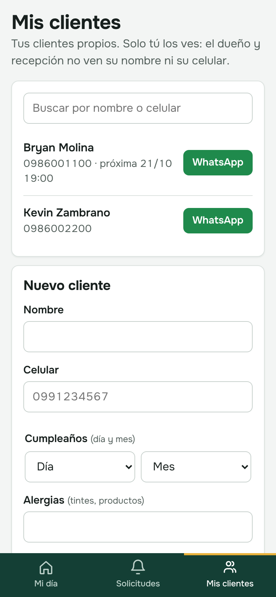
Con el módulo Portal y app del peluquero, cada peluquero entra con su propio acceso y ve Mi día: lo que ganó (Hoy, Esta semana o Este mes), los servicios hechos y las propinas, cuánto le debe el local o cuánto debe él, sus próximas citas (con el enlace a la Ficha técnica del cliente, si tienes ese módulo), lo que hizo y Tus servicios y lo que te toca. No ve la caja ni lo que ganan los demás. Si tú lo permites, acepta sus solicitudes desde Solicitudes.
Con el módulo Clientes privados de quien alquila, quien alquila el puesto tiene Mis clientes: guarda a sus clientes propios y los agenda en su silla. Tú ves la hora ocupada, pero no el nombre ni el celular.
En un mismo salón puedes tener los cuatro tipos a la vez. Al agregar a alguien eliges ¿Cómo trabaja? y TuSalón hace las cuentas solo con cada cobro.
| Tipo | Cómo gana | Qué calcula TuSalón |
|---|---|---|
| Dueño que atiende | Atiende en su silla. No cobra comisión. | Separa lo que produjiste en tu silla de la ganancia del local. |
| Empleado | Sueldo, comisión o las dos cosas. Puede estar afiliado al IESS. | Su comisión por cada servicio (o el pago fijo del servicio) y por cada producto, más sus propinas. |
| Por porcentaje | Se reparten cada corte: 50/50, 60/40… | La parte de cada uno en cada cobro. Si cobra la caja del local, el local le paga su parte; si cobra él directamente, él le paga al local la suya. |
| Alquila el puesto | Te paga un arriendo fijo (semanal, quincenal o mensual) y cobra a sus clientes con su propio QR. | Sus servicios son todos suyos; tú le cargas el arriendo con Cargar arriendo. |
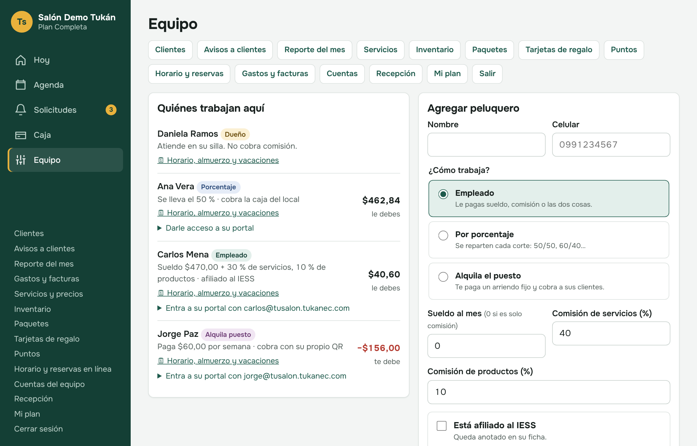
TuSalón se arma por módulos. Todos los salones tienen la base; los módulos se encienden o se apagan para cada salón según lo que necesita. Apagar un módulo nunca borra datos: si lo vuelves a encender, todo sigue como estaba.
| Módulo | Para qué sirve |
|---|---|
| 🗓️ Reservas en línea | Tu enlace para que los clientes reserven solos; cuenta del cliente, cambiar la hora y fotos |
| 💳 Anticipo en línea | El cliente paga una parte al reservar (necesita Reservas en línea) |
| 🎨 Ficha técnica de color | La fórmula de cada tinte con fotos de antes y después |
| 🔁 Clientes por recuperar | Quién dejó de venir, con el WhatsApp listo |
| 👥 Personas ilimitadas | Más de 3 personas que atienden |
| 📱 Portal y app del peluquero | Cada peluquero ve sus citas y lo que gana en su celular |
| 🔒 Clientes privados de quien alquila | Los clientes propios de quien alquila el puesto (necesita el Portal) |
| 🛎️ Cuenta de recepción | Agenda, cobra y cierra la caja sin ver tus ganancias |
| 📦 Inventario y venta de productos | Stock, aviso de que se acaba y venta al cobrar |
| 🎁 Paquetes y tarjetas de regalo | Varias sesiones pagadas por adelantado y tarjetas con código y saldo |
| ⭐ Puntos para clientes fieles | Ganan puntos al pagar y los cambian por descuentos |
| 🧾 Gastos con facturas del SRI | Sube las facturas que recibes y mira tu ganancia real (TuSalón no hace facturas) |
| 📊 Reporte del mes | Lo más vendido, el mejor peluquero y las horas vacías |
| 📲 Avisos automáticos por Telegram | Recordatorios, calificación, cumpleaños y avisos al equipo |
Todo se configura en Más → Horario y reservas en línea (en la computadora, en la columna de la izquierda). Toca Guardar al final de cada parte.
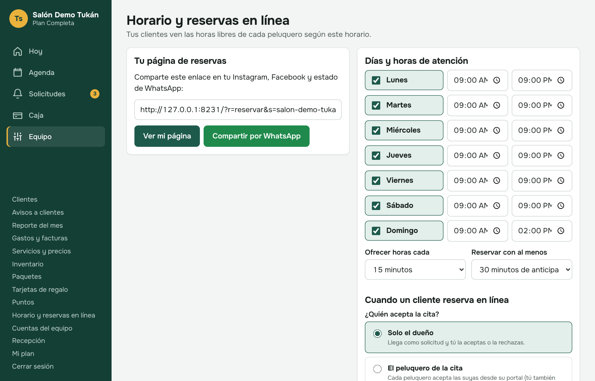
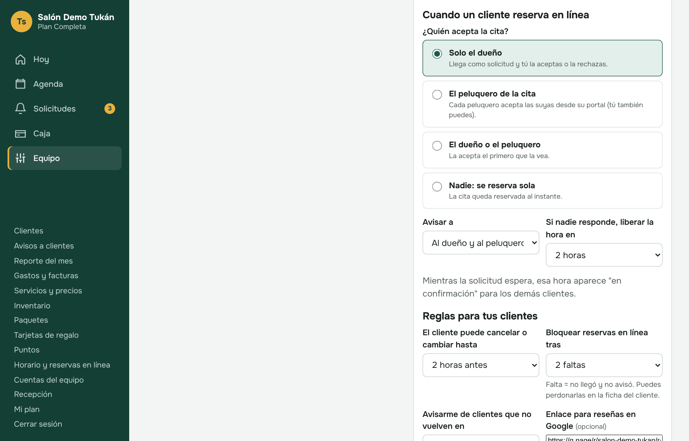
En Solicitudes, baja a Avisos por Telegram: toca Conectar mi Telegram, luego Abrir Telegram y en Telegram toca Iniciar. Desde ahí te llega cada solicitud con botones para aceptar o rechazar, y el reporte del mes. Cada persona con acceso puede conectar el suyo; tus clientes con cuenta también. Para dejarlo, toca Dejar de recibir avisos.
Al final de la misma página: ¿A quién pedir anticipo? (a todos, solo a clientes nuevos o solo a quienes ya faltaron), ¿Cuánto? (un % del servicio o dólares fijos), tus Datos para transferencia, tu Celular de DeUna y, si quieres cobrar con tarjeta, el Token de Payphone y el Store ID (los pasos están en «Cómo activarlo»). Toca Guardar anticipo.
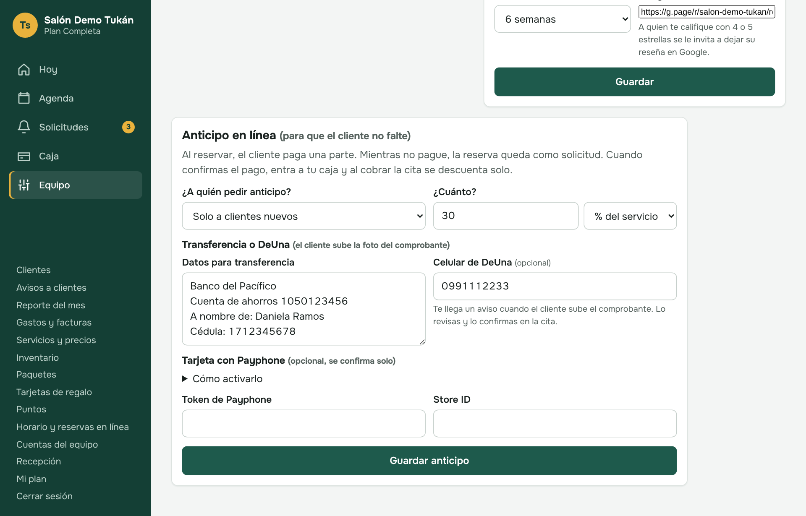
En Más → Servicios (en la computadora, «Servicios y precios») creas todos los servicios que ofreces, sin límite, con Agregar servicio:
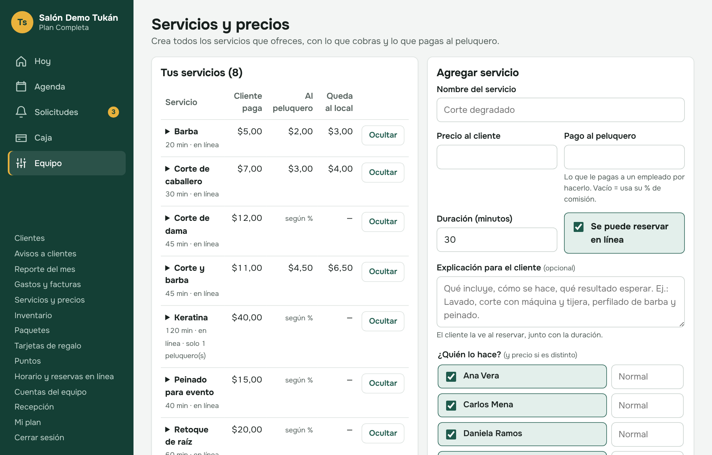
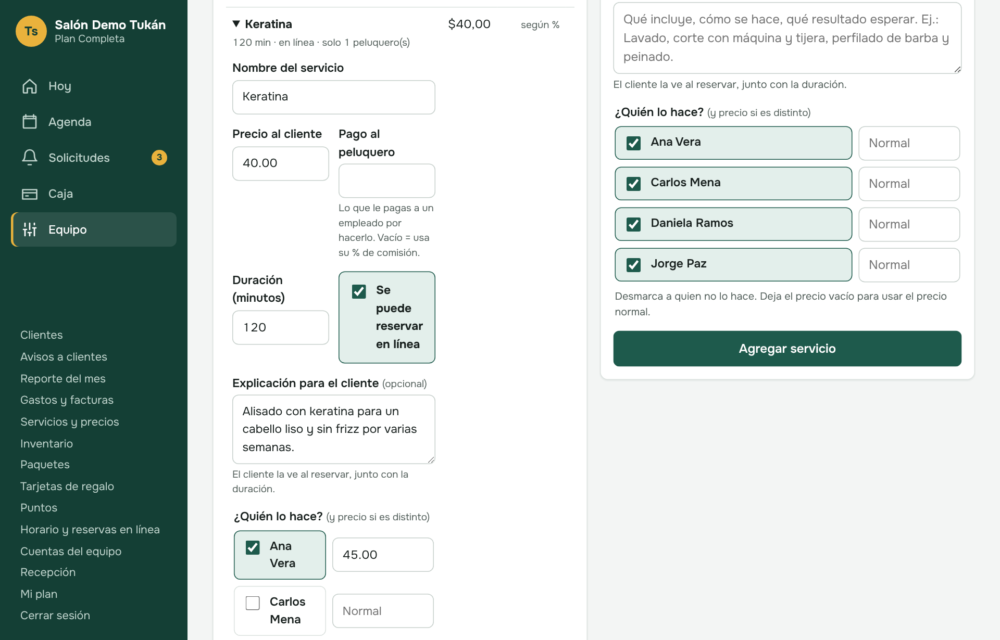
Para cambiar un servicio, toca su nombre en la lista y toca Guardar cambios. Ocultar lo saca de la lista sin borrar su historial; Mostrar lo devuelve.
Debajo del nombre de cada peluquero toca Darle acceso a su portal, escribe Su correo y una contraseña y toca Crear acceso (módulo Portal y app del peluquero). Después puedes Cambiar contraseña o Quitar acceso.
Debajo de cada nombre toca 🗓 Horario, almuerzo y vacaciones. Elige Usa el horario del salón o Tiene su propio horario (sus días, hora de entrada y salida, y almuerzo) y toca Guardar horario. Para vacaciones o un permiso, llena Desde y Hasta (incluido); si es por unas horas, abre Solo unas horas (ej. cita médica). Toca Bloquear esas fechas. En esas horas nadie le puede reservar.
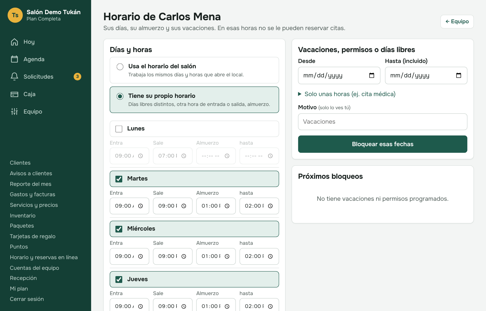
En Más → Cuentas (en la computadora, «Cuentas del equipo») ves, por persona, cuánto Le pagas tú o cuánto Te paga a ti, con Ver detalle de cada servicio, comisión, propina y arriendo. La propina es del peluquero que atendió: si la recibió la caja del local, se le suma a su cuenta.
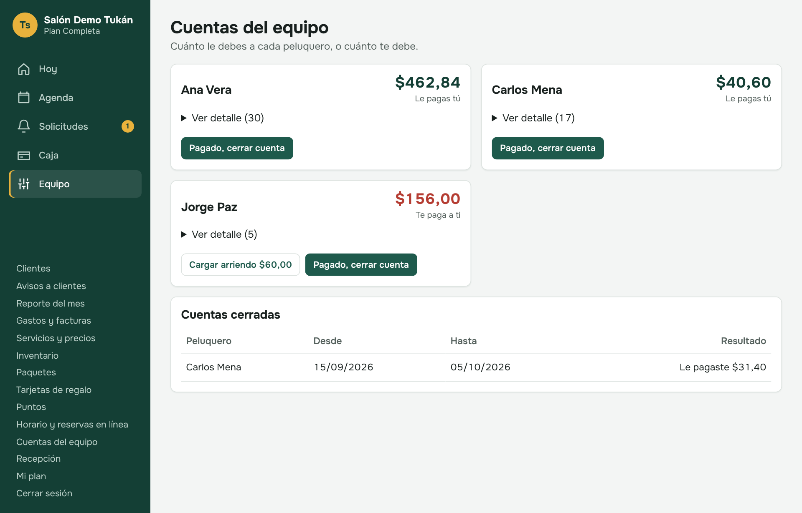
En Agenda ves el día con una columna por peluquero, cada uno con su color y su tipo. Usa ‹ y › para cambiar de día, Hoy para volver, o toca un espacio libre para agendar ahí.
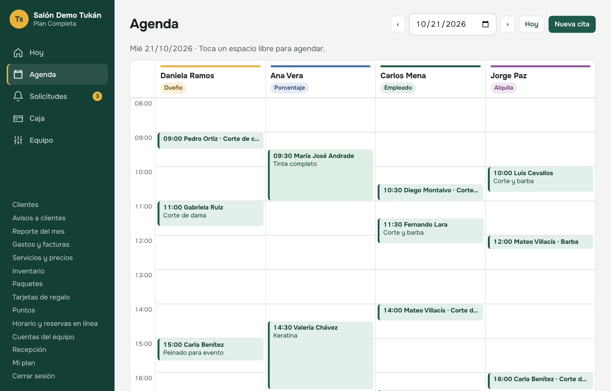
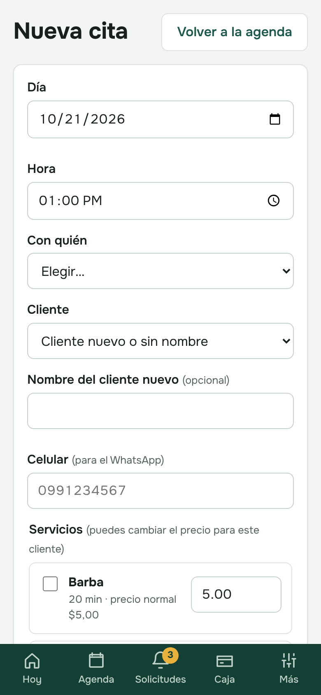
Toca una cita para abrirla. Ahí ves los servicios, el total y las notas, y en Qué hacer:
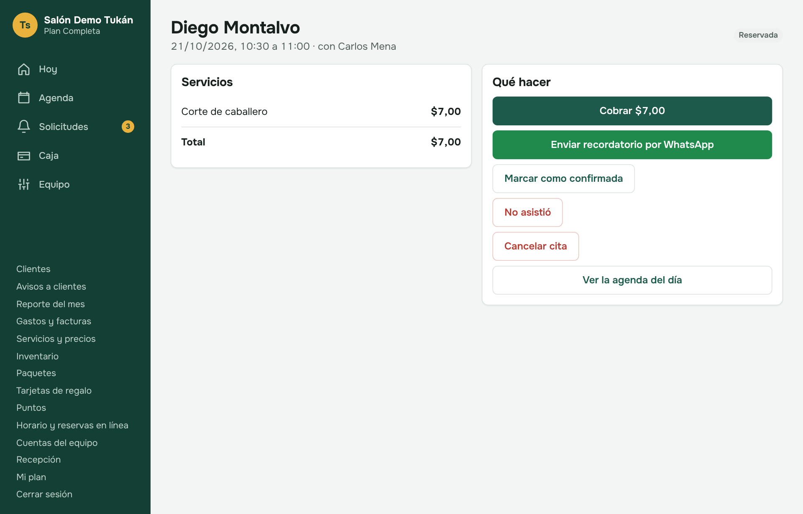
La agenda se desliza a los lados para ver a todos los peluqueros. Cuando el cliente confirma desde su enlace, la cita dice que confirmó y te llega un aviso.
En Hoy aparece la franja «citas de mañana por recordar»; tócala o ve a Más → Avisos a clientes. Toca WhatsApp en cada cita y luego Ya lo envié (capítulo 12).
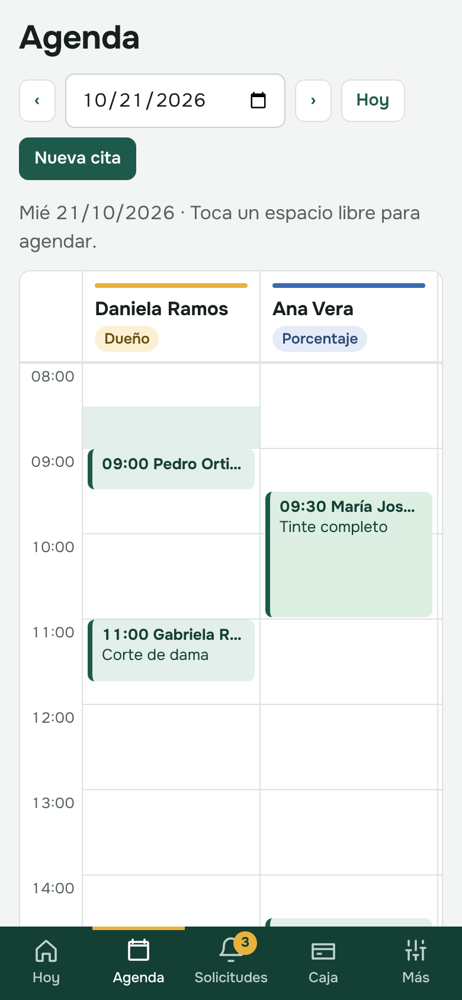
Tu cliente abre tu enlace, sin descargar nada ni crear cuenta, y sigue 5 pasos: ¿Con quién?, ¿Qué te vas a hacer?, ¿Qué día?, ¿A qué hora? y Tus datos.
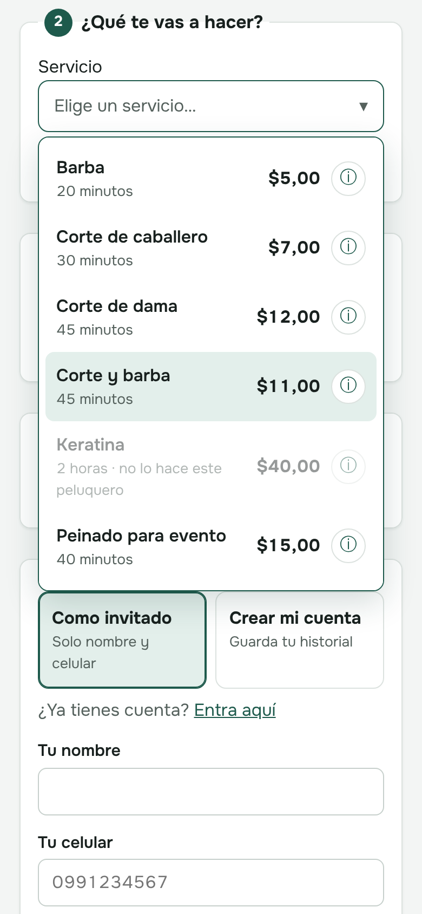
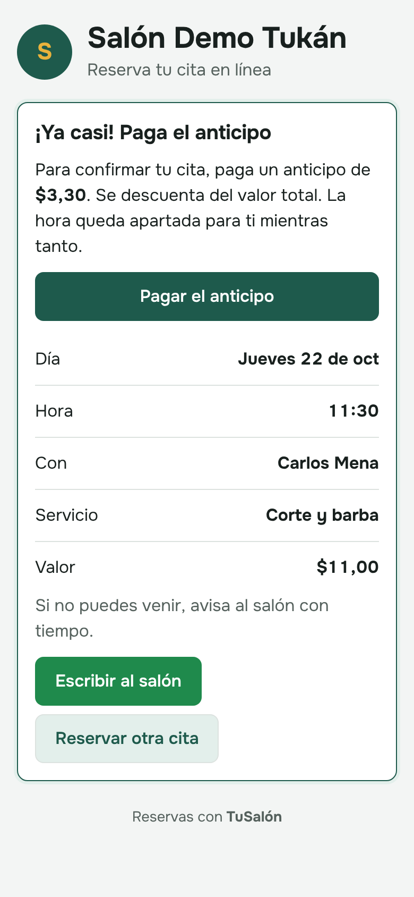
En Tus datos elige Como invitado (solo nombre y celular) o Crear mi cuenta (correo, contraseña, cumpleaños sin el año y permiso para guardar fotos de sus cortes), y toca Reservar cita. En la computadora, si deja el mouse sobre un servicio, se abre solo su detalle.
Cada reserva llega a Solicitudes (y a la franja amarilla de Hoy). Si quien acepta eres tú:
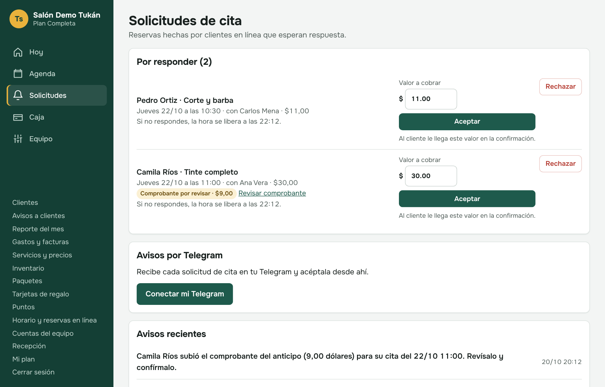
Cuando el cliente sube el comprobante te llega un aviso. Abre la cita (Revisar comprobante): ves el valor, el estado y la foto. Compárala con tu banco y toca Recibí el anticipo (entra a la caja de hoy y se descuenta solo al cobrar) o Comprobante no válido (el cliente puede subir otro). Con Payphone, el pago con tarjeta se confirma solo.
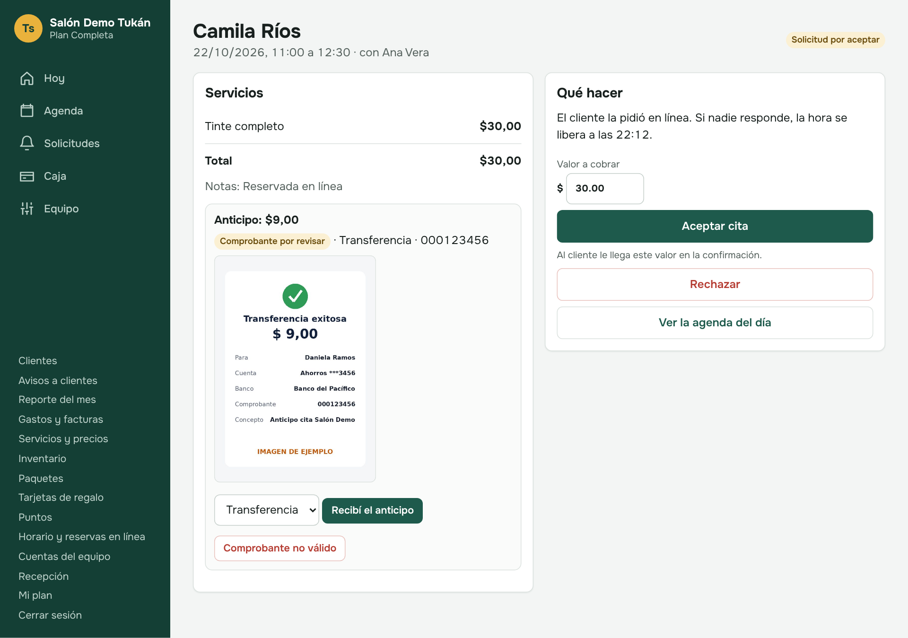
Al cliente le llega por WhatsApp (o Telegram) el enlace de su cita. Desde ahí: Confirmo que voy, Cambiar día u hora, Cancelar mi cita (hasta las horas antes que permitiste) y Escribir al salón. Si le tocó anticipo, ahí ve tus datos y sube la foto con Enviar comprobante (o paga con Pagar con tarjeta). Después de atenderlo, el mismo enlace le pide calificarte de 1 a 5 estrellas; con 4 o 5 se le invita a Dejar mi reseña en Google.
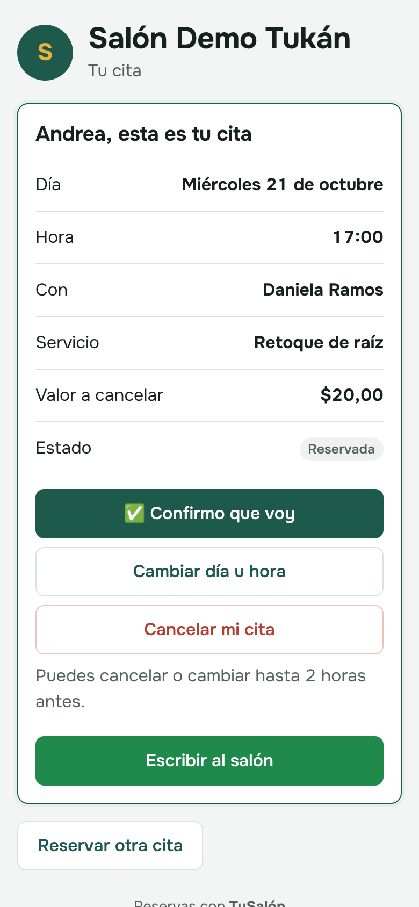
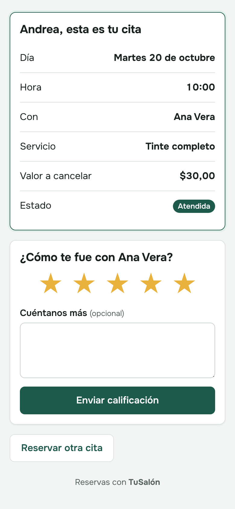
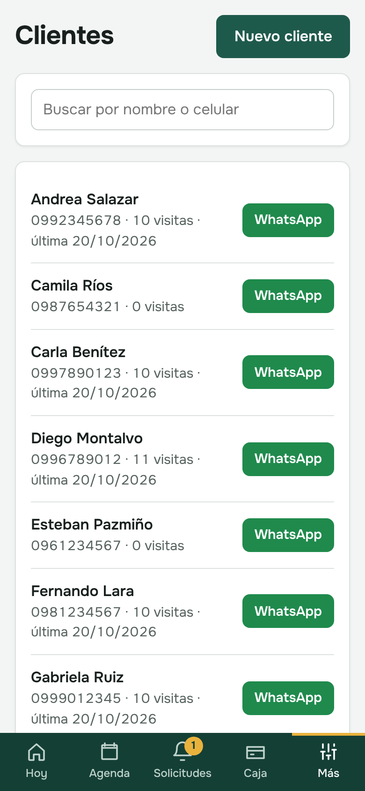
Abre la cita y toca Cobrar, o usa Cobrar en Hoy o en Caja para alguien sin cita.
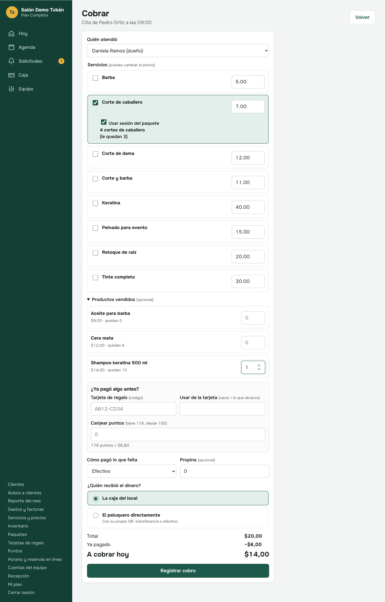
En Caja ves lo que entró a la caja del local, cuánto Debe haber en efectivo y lo que Cobraron los peluqueros directo; los Cobros del día uno por uno; los paquetes, tarjetas y anticipos vendidos; y el total Por forma de pago. Lo que ya estaba pagado (paquete, tarjeta, anticipo o puntos) se ve en cada cobro pero no se suma de nuevo. Usa Día anterior para ver otros días.
Cierre de caja: al final del día cuenta el efectivo, escríbelo en ¿Cuánto efectivo hay en la caja? y toca Cerrar caja. TuSalón te dice si sobra o falta. Un día cerrado ya no se puede cambiar.
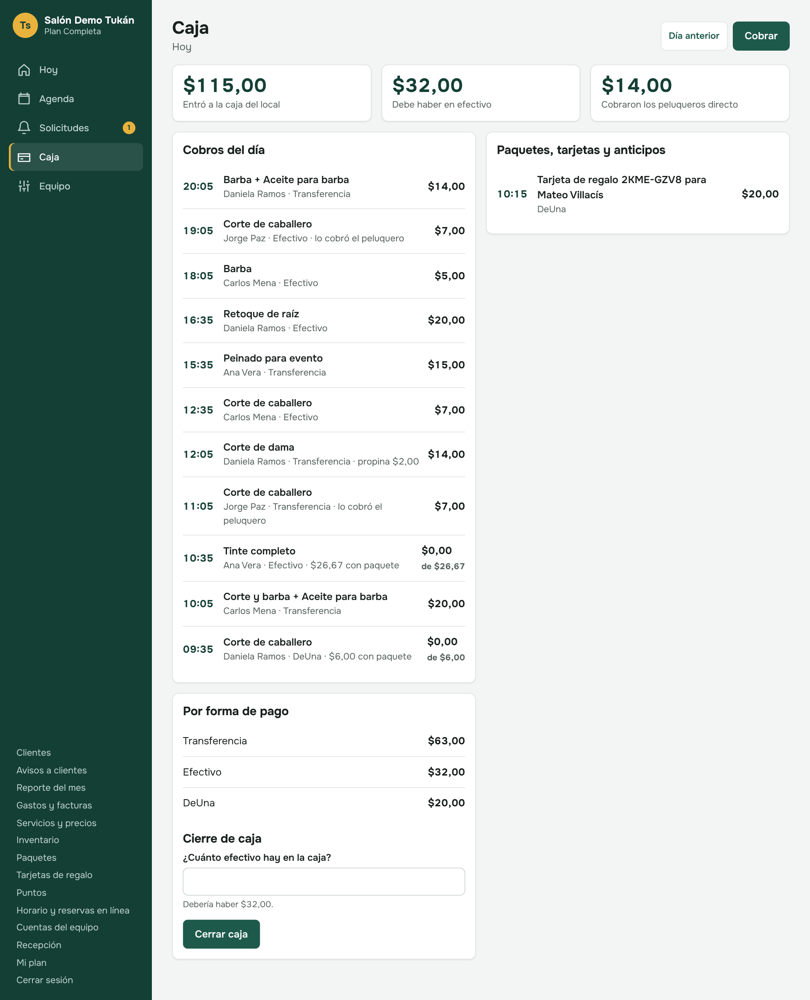
En Clientes buscas por nombre o celular; cada uno tiene su botón WhatsApp. Con Nuevo cliente lo creas a mano (también se crean solos al agendar o reservar). En su ficha guardas cumpleaños (día y mes), correo, Alergias y notas, y ves sus Visitas y el botón Agendar cita. Si tiene faltas, la ficha lo dice arriba; con Perdonar faltas puede volver a reservar en línea.
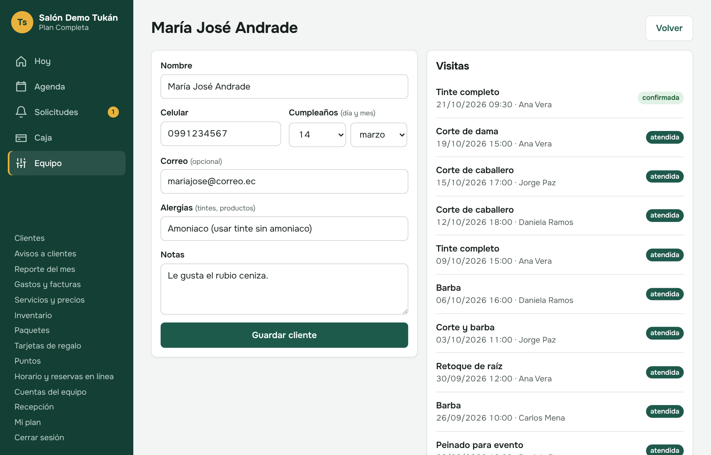
Desde la ficha del cliente toca Ver ficha técnica (o Crear ficha técnica). Arriba siempre sale el aviso de alergias. En Nueva ficha anotas el trabajo, la marca, el tono, el oxidante, el tiempo, la Fórmula exacta, quién lo hizo y el resultado; si el cliente lo permite, marca El cliente autorizó las fotos y sube la de antes y la de después. Toca Guardar ficha. Las fotos solo las ve el personal del salón.
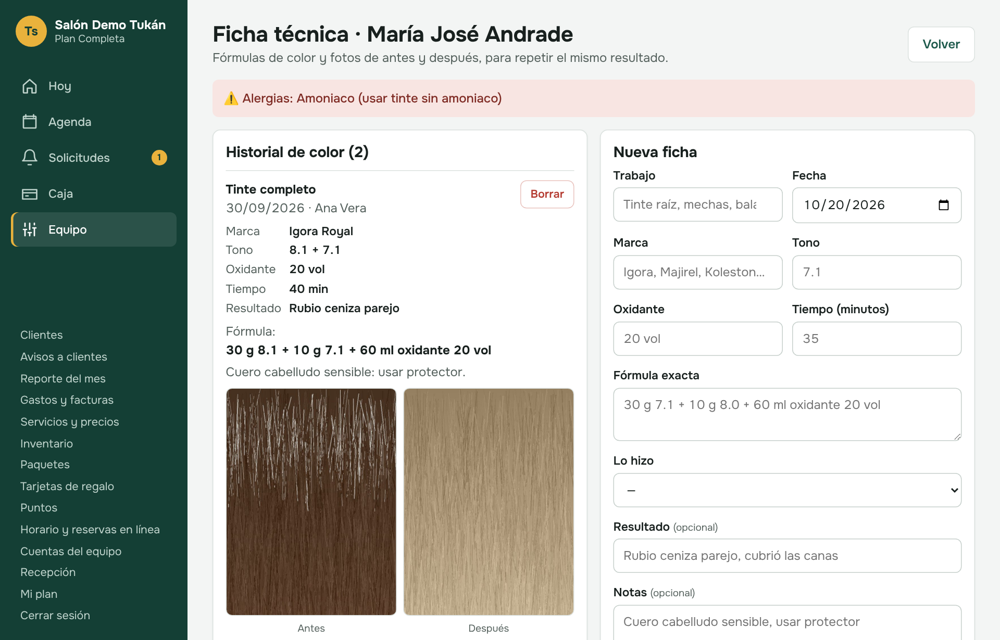
En Más → Avisos a clientes: Recordar las citas de mañana (toca WhatsApp y luego Ya lo envié), Cumpleaños de hoy (Saludar y Listo) y Clientes por recuperar (Invitar a volver manda tu enlace de reservas). Con el módulo de Telegram, a los clientes con Telegram conectado el recordatorio se les envía solo.
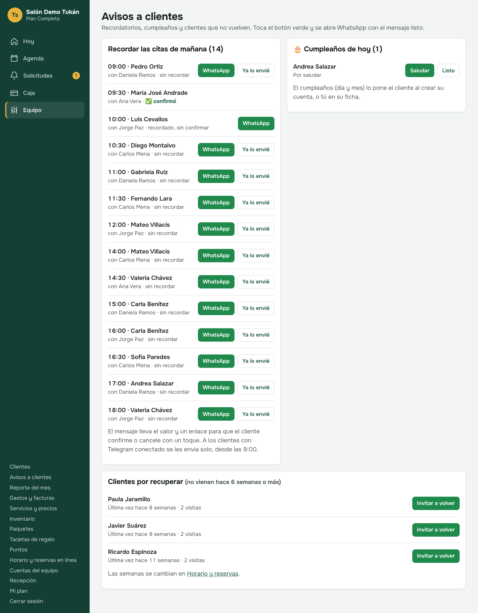
En Más → Inventario anotas lo que vendes (Lo vendo al cliente: aparece al cobrar) y lo que usas en el salón (Lo uso en el salón: tintes, oxidantes, ampollas). Arriba ves cuántos productos tienes, cuánto dinero hay en el estante y cuántos se están acabando. Con Agregar producto pones nombre, marca, precio al cliente, lo que te cuesta, cuántos tienes hoy y Avisarme cuando queden. Con Abrir registras Llegó mercadería (Sumar al stock), Se usó en el salón (Descontar) o Corregir conteo, y ves el historial. Al vender al cobrar se descuenta solo, y no deja vender más de lo que hay.
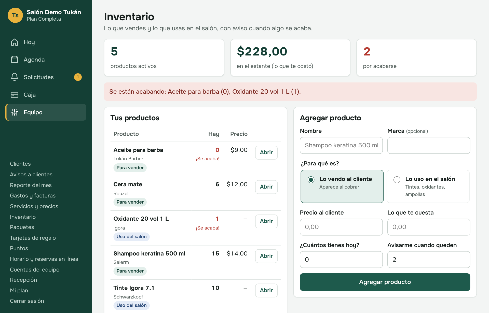
Paquetes: el cliente paga varias sesiones por adelantado. En Crear paquete eliges el servicio, las sesiones, el precio y en cuántos días vence; en Vender un paquete eliges paquete, cliente y cómo pagó, y tocas Vender paquete (el dinero entra hoy a la caja). Cuando el cliente vuelve, al cobrar marcas «Usar sesión del paquete». Un paquete vendido por error y sin usar se puede Anular.
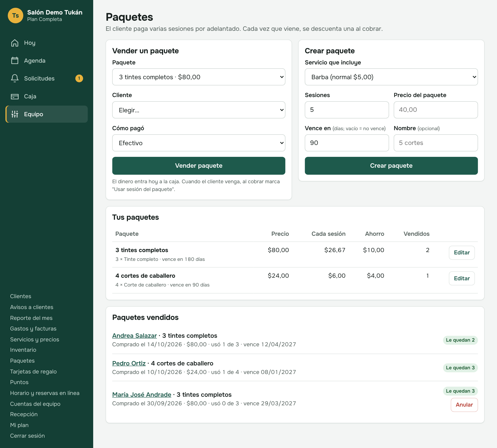
Tarjetas de regalo: en Vender una tarjeta de regalo pones el valor, cómo pagó, de parte de quién, para quién, su celular y un mensaje, y tocas Crear tarjeta. TuSalón crea un código único; la puedes Enviar por WhatsApp o Imprimir. Para ver cuánto le queda, escribe el código y toca Ver saldo. Al cobrar, se escribe el código y se descuenta solo.
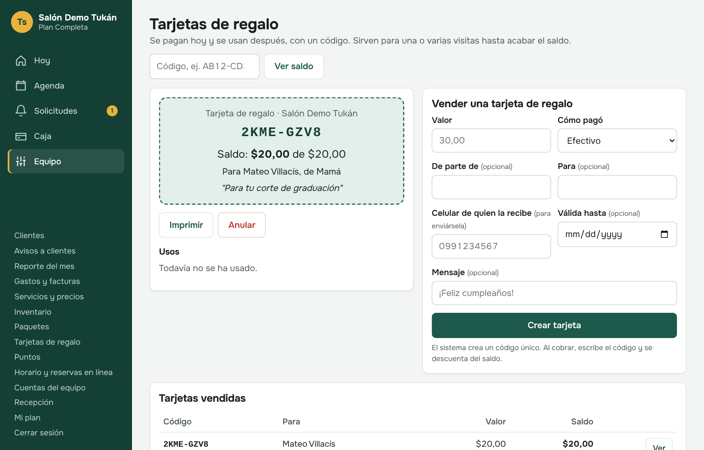
En Más → Puntos marca Dar puntos a mis clientes, elige los Puntos por cada $1 pagado, cuánto valen 100 puntos y desde cuántos se canjean; el ejemplo te muestra cómo queda. Los puntos se suman solos al cobrar si eliges el cliente (sin propina; lo pagado con paquete, tarjeta o puntos no suma). También puedes Regalar o quitar puntos.
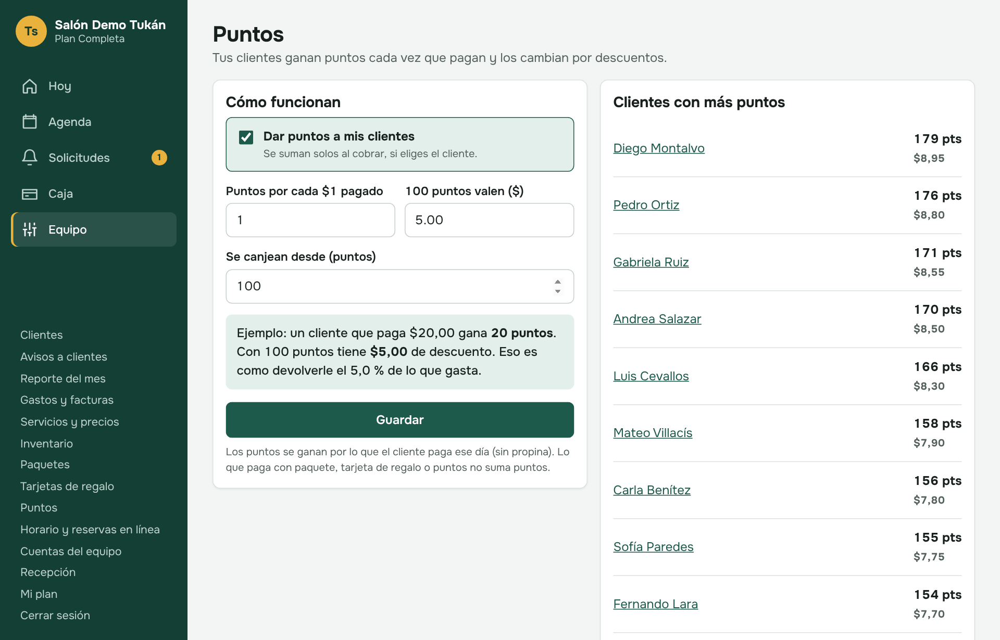
En Más → Reporte del mes eliges el mes y ves las ventas, los clientes nuevos y las reservas en línea, tu calificación, Lo más vendido, cuánto vendió cada peluquero con sus estrellas, las Horas más vacías y el día más flojo (buenos para una promoción), y las faltas, cancelaciones y propinas. Con Telegram, te llega solo cada día 1 o con Enviar este reporte a mi Telegram.
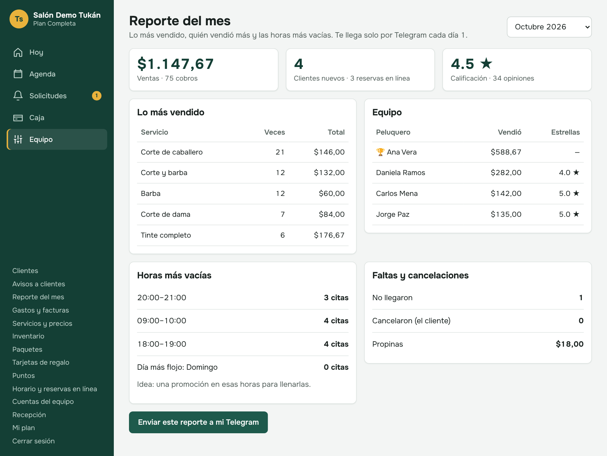
En Más → Mi plan ves tu plan y hasta cuándo está pagado, lo que pagas por él y su renovación, Tus módulos encendidos, los Módulos que puedes agregar y Lo que siempre tienes (la base).
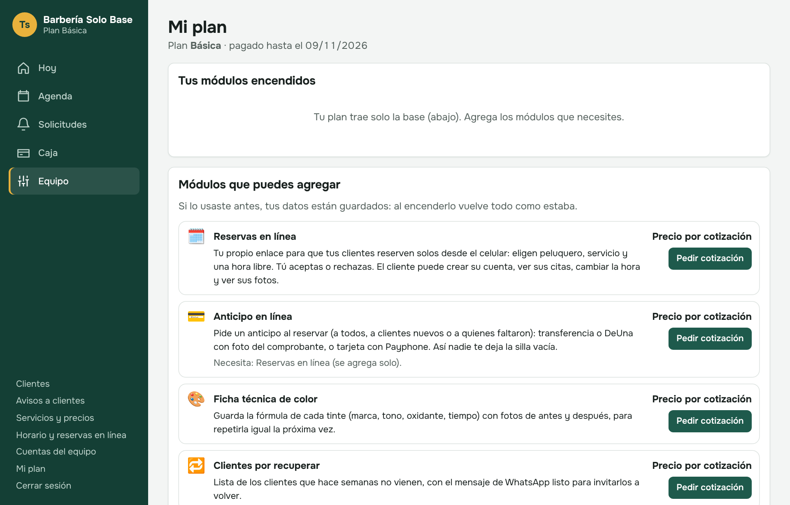
Desde la página «No está en tu plan» de un módulo también puedes tocar Pedir cotización o Ver Mi plan.
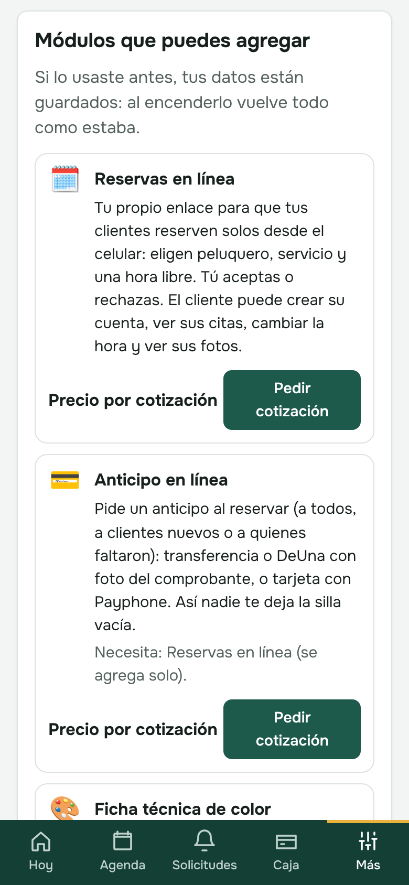
Unos días antes de que venza tu plan aparece arriba «Tu plan vence…» con Renovar. Si se vence, tienes unos días de gracia; después, al entrar verás «Tu plan venció» con Ver Mi plan y Escribir por WhatsApp. Tus datos nunca se borran.
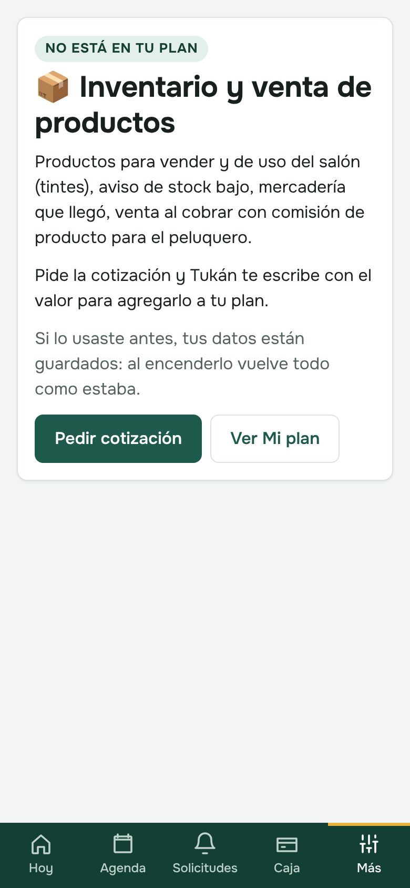
| Pregunta o problema | Qué hacer |
|---|---|
| Olvidé mi contraseña | Escríbele a Tukán por WhatsApp. Si es un peluquero o recepción, el dueño le pone una nueva en Equipo o en Recepción con Cambiar contraseña. |
| Un cliente dice que no ve horas libres | Revisa que ese día el peluquero trabaje (su horario y sus vacaciones), que haga ese servicio y que el servicio tenga marcado «Se puede reservar en línea». |
| Un cliente no puede reservar en línea | Puede tener faltas. Ábrelo en Clientes y toca Perdonar faltas. |
| Me equivoqué de precio al agendar | Al cobrar puedes cambiar el precio de cada servicio. |
| Un cliente no llegó | Abre su cita y toca No asistió. La hora queda libre y se cuenta su falta. |
| Dice que pagó el anticipo | Abre su cita: si subió el comprobante, lo ves ahí. Compáralo con tu banco y toca Recibí el anticipo. |
| ¿Cuánto le queda a una tarjeta de regalo? | Más → Tarjetas de regalo, escribe el código y toca Ver saldo. |
| Vendí un paquete o una tarjeta por error | Si todavía no se usó, ábrelo y toca Anular. Se quita de la caja. |
| No me deja agregar otro peluquero | Sin el módulo «Personas ilimitadas», el salón tiene hasta 3 personas. Pídelo en Mi plan con Pedir cotización. |
| Una página dice «No está en tu plan» | Ese módulo no está encendido para tu salón. Toca Pedir cotización; tus datos de antes siguen guardados. |
| ¿Cuánto cuesta un módulo? | Es por cotización: pídelo en Mi plan y Tukán te escribe con el valor. |
| ¿Mis datos están seguros? | Sí. Cada salón solo ve lo suyo y se hace una copia de seguridad cada día. |
| ¿Funciona sin internet? | No. Necesitas datos móviles o wifi; gasta muy poco. |
| La pantalla se ve rara | Recarga la página (desliza hacia abajo en el celular). Si sigue igual, escríbenos. |